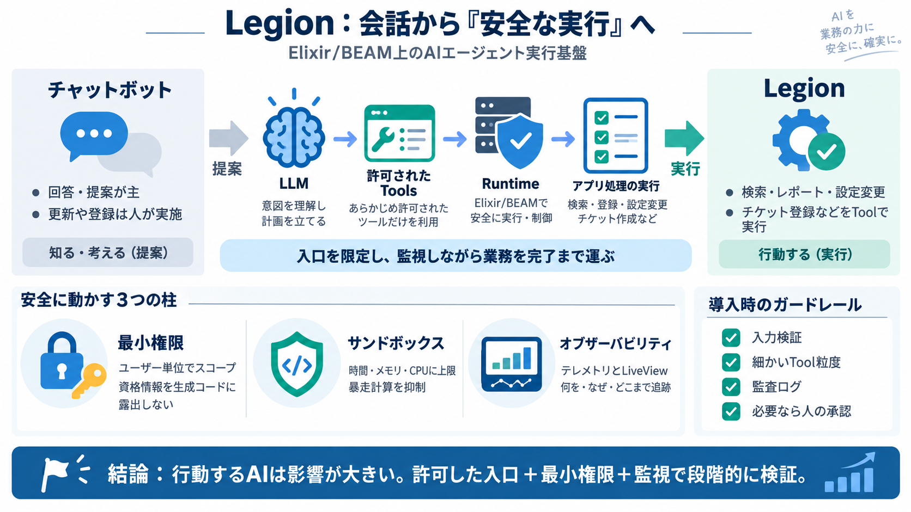

Legion - an AI agent inside your Elixir app
Set auth context before the agent starts and read it inside your tools at runtime. Every call the agent makes is scoped …

Legionは、Elixir（BEAM）上で動くAIエージェントのランタイムで、会話ではなく“アプリ処理を実行する”ことを狙います。
English: AI agent runtime / Japanese: エージェント実行基盤
LLMを“提案役”で終わらせず、レポート実行・設定変更・チケット登録のような実処理まで任せると、誤作動の影響が大きくなります。
Legionは、許可したツールだけを入口として、AIに“アプリ内部で行動させる”設計思想を取ります。
Legionは「安全性・制御可能性・運用性」を中心に、ツール連携と権限境界、そして観測性を要件化します。
Legionは受け答えだけではなく、ツールを通じてアプリの処理を実際に動かします。
Legionは、単発の関数呼び出しよりも、検証された Lua/Elixir を組み合わせることで複雑な達成を狙います。
LuaはホストBEAMへ到達できないとされ、時間・メモリ・CPUなどの上限で隔離し、危険な実行を抑えます。
ただし、ネットワーク・ファイル・禁止事項の境界は提示情報だけでは確定できません。
認証コンテキストをユーザー単位でスコープし、資格情報が生成コードに見えない設計を重視します。
Legionはテレメトリを多層に取り、 legion_web の LiveView で会話とコード生成の行まで可視化します。
提示情報に基づく“最短の答え”を整理します。
提示文からは、安全性（サンドボックス・入口限定）、権限境界、そしてLiveViewを含む観測性の組み合わせが強みとして見えます。
結論：コンセプトは有望だが、導入ではガードレールを追加して段階的に検証するのが現実的です。
行動するAIは会話より影響が大きいので、最小権限・入力検証・監査ログ・（必要なら）人の承認フローを組み合わせて設計します。
Japanese gloss: 最小権限（least privilege）
Set auth context before the agent starts and read it inside your tools at runtime. Every call the agent makes is scoped …
Legion AI follows enterprise-grade security standards to protect customer data. The platform complies with SOC 2 trust s…
Features TL;DR: Elixir modules as tools Agents as processes Agents write code that runs in a Lua (or Elixir) sandbox…
Most AI agents are trapped in a “chat-and-call” loop, restricted by rigid function-calling interfaces. Legion breaks thi…
Legion uses a multi-layered security approach. Data in transit is encrypted with TLS protocols, and data at rest is prot…